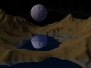
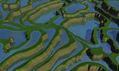

{kind=link}
{kind=link}


| Script |
Description |
Terrains
secondaires associés |
Exemple |
| canyon.pov |
Sol stratifié brun-roux,
portant de l'herbe vert tendre lorsque la pente diminue, avec un plan
d'eau à la base du terrain, pour remplir le fond du canyon. |
- |
|
| cracknet_bumptest.pov |
Plan de sol texturé
à l'aide du terrain utilisé comme "carte de normales" et
répété à l'infini. |
- |
|
| cracknet_nobump.pov |
Le terrain principal constitue l'arrrière-plan, ground_map.png est un avant-plan. | ground_map.png:
crevasses au sol rendues par un deuxième terrain.
Ce terrain n'est pas répété, et comme il est
à l'avant-plan, où les détails sont plus visibles,
il est préférable d'utiliser un grand terrain. |
|
| cracknet.pov |
Le terrain principal constitue
l'arrrière-plan, ground_map.png
est un avant-plan constitué d'une "carte de normales". C'est en
fait la combinaison de cracknet_bumptest.pov
et d'un
arrière-plan. |
ground_map.png:
crevasses au sol rendues par une "carte de normales"
répétée à l'infini. |
|
| desert_new.pov |
Un désert où le
terrain principal est à l'avant-plan (typiquement des dunes) et background_map.png constitue des
montagnes à l'arrière-plan. |
background_map.png:
montagnes à l'arrière-plan |
|
| desert.pov |
Une simple scène de
désert, dans laquelle le terrain principal est placé sur
un plan de sol infini présentant une texture de sable
ondulé. |
- |
|
| giant_causeway.pov |
Un terrain de texture gris
foncé légèrement moucheté, visan à
imiter le basalte, avec une "carte des eaux" pour simuler les flaques
au-dessus des colonnes de basalte. |
hf_water.png: la "carte des eaux" | |
| iced_satellite.pov |
Un plan de sol craquelé
visant à imiter la glace, un terrain gris-bleu foncé, un
ciel étoilé et une Uranus aux couleurs accentuées. |
- |
|
| moon.pov |
Une sphère
texturée à l'aide du terrain en cours d'édition,
typiquement des cratères. |
- |
|
| mountains.pov |
Une scène de montagnes
comportant une texture à 4 composantes (forêt - arbustes -
roc - neige) variant selon l'altitude et la pentes. |
- |
|
| mountains_with_water.pov |
Une scène de montagnes comportant une texture à 4 composantes, ne variant que selon l'altitude. La forêt devient un roc humide en bas de la valeur contenue dans la variable waterlevel, initialisée au début du script. Lors de l'installation, cette valeur est fixèe à 10300 (sur une échelle de 0 à 65535). Une "carte des eaux" permet de défnir un ou plusieurs plans d'eau, sous la limite waterlevel. | hf_water.png:
la "carte des eaux" |
|
| painted_desert.pov |
Une scène imitant le
Désert Paint d'Arizona, avec une texture stratifiée
tirée d'une photographie. |
- |
|
| sea_and_fog.pov |
Le terrain apparaît sur un
plan
d'eau et porte une texture stratifiée. La ligne d'horizon est
cachée par un brouillard. Un sol sablonneux apparaît sous
l'eau. À utiliser avec une
"île", c'est-à-dire un terrain dont les côtés
ont été rabaissés par un "filtre de forme". |
- |
|
| sea_and_rocks.pov |
Similaire à sea_and_fog.pov, mais avec une
texture imitant un récif de granite. |
- |
|
| sea_n_moon.pov |
Un paysage de nuit: le terrain
porte une simple texture rocheuse. Le ciel est étoilé.
Une sphère texturée à l'aide d'un deuxième
terrain (craters.png -
même principe que dans moon.pov)
imite la Lune. |
craters.png:
terrain utilisé comme "carte de normales" pour simuler le relief
de la Lune |
 |
| simple_terrain.pov |
Le rendu par défaut de
Geomorph - une texture unie, brun clair, sans plan d'eau ni ciel. |
- |
|
| sunseta.pov |
Un coucher de soleil en
contre-jour, avec un soleil orange et estompé à
l'arrière-plan, un plan de sol et du brouillard. |
- |
|
| sunsetb.pov |
Une variante de sunseta.pov, avec un plan d'eau. |
- |
|
| terraces.pov |
Le terrain porte une texture qui
dépend de la pente: strates rocheuses lorsque la pente est
élevée, herbe simulée lorsqu'elle est faible. Une
"carte des eaux" permet de simuler des flaques. |
hf_water.png: la "carte des eaux" |  |
Écrit le 20 janvier 2007
Contact: Patrice St-Gelais
 Retour
à l'index de la
documentation
Retour
à l'index de la
documentation